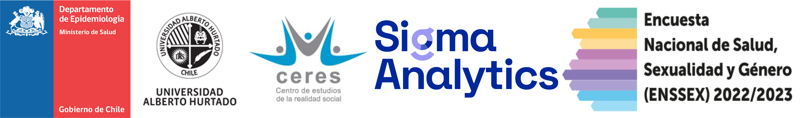
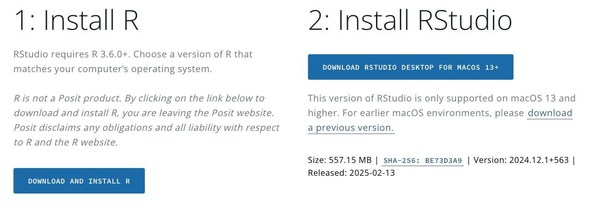

DESENTRAÑANDO LA ENCUESTA NACIONAL DE SALUD, SEXUALIDAD Y GÉNERO 2022-2023: ANÁLISIS REPRODUCIBLES EN R
Primer congreso chileno de estudios interdisciplinarios sobre diversidad sexual y de género.

Agradecimientos
Este workshop ha sido posible gracias a Jaime Barrientos, Coordinador General del Congreso y del equipo de vigilancia de enfermedades no transmisibles y encuestas poblacionales, Departamento de Epidemiología, Subsecretaría de Salud Pública.
Sobre el workshop
Este workshop busca capacitar a los participantes en el uso de datos de la Encuesta Nacional de Salud, Sexualidad y Género (ENSSEX) 2022-2023, empleando herramientas de código abierto en R para un análisis reproducible y ético.
Tendremos 4 bloques de trabajo:
Bloque 1: Exploración de los datos ENSSEX (09:00 – 11:00). Tendremos unos 20 minutos iniciales para preparar nuestra estación de trabajo.
Coffe Break
Bloque 2: Uso de ponderadores y diseño de muestra compleja (11:30 – 13:00).
Almuerzo
Bloque 3: Visualización de datos (14:30 – 16:00).
Coffe Break
Bloque 4: Modelamiento estadístico (16:30 – 18:30).
Todos los bloques de trabajo serán en el mismo lugar: Sala 3D, Campus B, Universidad Alberto Hurtado. Avenida Los Leones 1200. Metro Los Leones, línea 1 y 6 Metro de Santiago.
Al final del workshop se hará llegar un certificado de asistencia para quienes participaron de todos los bloques.
¿Para quién está pensado este workshop?
Investigadores/as y académicos/as en ciencias sociales, salud pública y áreas afines al congreso.
Estudiantes avanzados/as de pregrado o postgrado con interés en análisis de datos y áreas afines al congreso.
Profesionales interesados/as en datos sobre salud sexualidad y género, y su análisis riguroso.
Requisitos
Este workshop no tiene requisitos previos, pero se valora conocimientos básicos de R y RStudio, además de cierta familiaridad con conceptos de estadística descriptiva e inferencial.
La sala 3D dispone de computadores para trabajar, si usted quisiera llevar un computador asegúrese de que cumpla con los siguiente requisitos mínimos (es el estándar de los computadores actuales):
✅ Procesador: Intel Core i5 (8ª generación o superior) / AMD Ryzen 5 o equivalente.
✅ Memoria RAM: 8 GB de base (16 GB recomendado para un mejor rendimiento).
✅ Espacio en disco: Al menos 10 GB de espacio libre en el disco duro o SSD (SSD recomendado para mayor velocidad).
✅ Conectividad: Wi-Fi funcional para acceder a materiales y paquetes en línea.
✅ Sistema operativo compatible: Windows 10 o superior / macOS 10.15 (Catalina) o superior / Linux (Ubuntu 20.04 o superior).
Para quiénes quieran llevar su computador les recomendamos encarecidamente llevar instalado:
✅ R versión 4.2 o superior instalado.
✅ RStudio versión 2023.09.0 o superior instalado.
Para instalar ambas herramientas pueden acceder al siguiente enlace: https://posit.co/download/rstudio-desktop/

Pueden instalar ambos en menos de 4 minutos con este video:
En 6 minutos pueden tener una idea clara de cómo es el trabajo en RStudio:
Librerías de trabajo
Cada bloque tendrá librerías específicas de trabajo, pero si quieren avanzar pueden instalar las siguientes (copia y pega este código en tu consola de RStudio):
# Listamos las librerías necesarias para el workshop
paquetes <- c("tidyverse", "survey", "srvyr", "ggplot2", "rio",
"haven", "broom", "janitor", "labelled")
# Este código permite instalar solo las librerías que no están instalados en nuestro computador
paquetes_instalar <- paquetes[!paquetes %in% installed.packages()[, "Package"]]
if(length(paquetes_instalar) > 0) {
install.packages(paquetes_instalar, dependencies = TRUE)
}
# Cargamos los paquetes en nuestra sesión de trabajo
lapply(paquetes, library, character.only = TRUE)Te dejamos una pequeña descripción de las librería de trabajo:
| Paquete | Descripción |
|---|---|
tidyverse |
Manipulación y visualización de datos. Incluye dplyr, ggplot2, readr, entre otros. |
survey |
Análisis con ponderadores y diseños de muestra compleja. |
srvyr |
Versión más amigable del paquete survey, compatible con tidyverse. |
ggplot2 |
Creación de gráficos personalizables. |
rio |
Carga y exportación sencilla de archivos de múltiples formatos (.sav, .dta, .csv, .xlsx). |
haven |
Importación de datos en formato SPSS, Stata y SAS. |
broom |
Presentación ordenada de resultados de modelos estadísticos. |
janitor |
Limpieza y formateo de datos, especialmente útil para tablas con nombres de variables desordenados. |
labelled |
Manejo de etiquetas en datos provenientes de encuestas. |
Estaremos disponibles desde las 8:30 para resolver dudas o problemas de instalación fuera de la sala del workshop. Cualquier pregunta pre y post workshop pueden escribir a jdconejeros@uc.cl
Encuesta Nacional de Salud, Sexualidad y Género (ENSSEX) 2022-2023
La Encuesta Nacional de Salud, Sexualidad y Género (ENSSEX) 2022-2023 es un instrumento clave para el análisis de la salud y la sexualidad en Chile, proporcionando información representativa a nivel nacional.
Descripción breve:
- 📅 Año de levantamiento: 2022-2023
- 📍 Cobertura: Nacional
- 📋 Temas principales: Salud, sexualidad, género, acceso a servicios de salud
- 📂 Formato de datos: CSV, SAV, XLSX, RDATA
🔗 Datos oficiales: Encuesta ENSSEX 2022-2023 en Datos.gob.cl
Los datos están disponibles en formato abierto, permitiendo su uso para análisis estadísticos y estudios en diversas disciplinas. Recomendamos descargar los datos previamente (formato .Rdata o .sav), Si tiene problemas para descargar los datos pueden hacer click en alguno de los siguientes enlaces:
Links Complementarios
Para seguir profundizando les dejamos algunos enlaces de interés:
R para Ciencia de Datos: Libro base para el uso de R, aquí podrán ver que la plataforma de Rstudio no es solo para el análisis estadístico, sino que de procesamiento de datos y reporte (versión en español).
AnalizaR Datos Políticos: Manual con herramientas y tips prácticos para analizar datos políticos.
UCLA: Espacio para aprender estadística y programación.